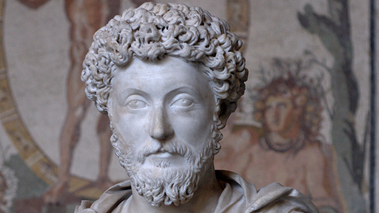

前回の『KINGDOM』に続き、今回も本の紹介です。
今回紹介したいのは『自省録』という本。古代ローマの皇帝マルクス・アウレリウス・アントニヌスが書いた覚え書きを編集したものです。著者のマルクス・アウレリウス・アントニヌスは、古代ローマ帝国で最も傑出した5人の皇帝「五賢帝」の一人で、「哲人皇帝」とあだ名される大物です。
五賢帝の時代
彼が生きた紀元二世紀、ローマ帝国は繁栄の極みにありました。地中海を中心に現在のヨーロッパから中東、北アフリカ、小アジア、バルカン半島まで版図におさめる空前絶後の大帝国です。ただ領土が広いだけではなく、人々の生活水準もかなり高度で、一説にはこのままローマが滅びなければ人類は紀元1000年頃には月に立っていた、と言われるほど。よりわかりやすくいえば、近年話題になった漫画『テルマエ・ロマエ』の舞台がちょうどこのあたりの時代です。
さて、このような繁栄の時代に、国家の頂点に立ったマルクス・アウレリウス・アントニヌスですから、その生活もさぞや豪華なものだっただろうと想像します。壮麗な宮殿で毎日ごちそうを食べて楽しく暮らしていたのだろうと思われるかもしれません。確かに彼の「周囲」はそうでした。しかし、彼だけは高い倫理観をもって自らの身を律し、皇帝の重責を全うしたといわれています。
ストイック
「周りに流されず、欲望を捨てて自分の責務を全うする。」そんな人のことを「ストイック」といいますが、まさに彼は「ストイック」な人でした。実際、彼ほど「ストイック」という言葉が似合う人は他にいません。というのも、「ストイック」は元々の意味を「ストア派的な」といいます。ストア派とは古代ギリシアの哲学思想の一派で、人の生を「死への準備」であると捉えて、世俗のものに興味を抱かず精神の平穏を求める生き方を追求した人々をさします。マルクス・アウレリウス・アントニヌスは実際このような生き方をするとともに、ストア派の哲学者でもありました。
『自省録』には上述したような彼の生き方が綴られています。目もくらむような栄華に背を向けて清貧を貫き、精神的な幸福を求める姿は、正直なところ現代の私たちには少し「退屈」かもしれません。簡単にいってしまえば道徳の教科書を読んでいるようなもの。どこをとっても「ごもっとも。その通り」というしかない正論ばかりで、時折挟まれる目の覚めるような名句以外は、気を張っていないと読み飛ばしてしまうかもしれません。
しかし、彼がこの原稿を書いた理由を思い返すと、一見陳腐にすら思える道徳的な文章が俄然迫力をもって読者に迫ってくるのです。冒頭に述べたように、彼はこの『自省録』を自分自身に向けて書きました。他人に伝えるためにではなく、自分に伝えるために。ということは、彼はこの『自省録』に書かれた内容を、”実際にはできていなかった”、そして、”できるようになるために苦闘していた”ということなのです。およそ当時の世界で最高の権力者として、どんな欲望も満たしうる力を持ちながら、欲望に流されずに必死で自分を律しようとする彼の姿は、飽食の時代に生きる我々の心を打ちます。
古代の偉人の心の内を推し量りながら、自分自身の人生を見つめ直すことができるこの一冊。古代ローマの歴史を学びながら読んでみると、なかなか趣深いものです。